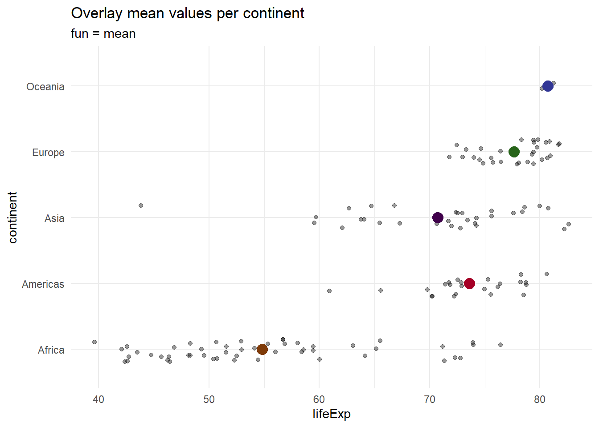

Adding Summary Statistics
This section covers utilization of built-in functions to plot summary statistics. The first several sections look at using typical graphing functions but instead of plotting actual data points from the dataset, we will plot a computed summary statistic instead. Then, we’ll use the gf_summary function to explore ways of building similar plots.
1 Points Summary
In this section, we create various plots and overlay a point on top of our visualization. This point can represent the mean, median, min, etc. The overlaid point utilizes a statistical summary function.
Example (mean): gf_plot(Y~X, data = Dataset) %>% gf_point(Y~X, data = Dataset, stat = “summary”, fun = “mean”)
The fun option can take on values such as mean, median, min, max, etc.
gf_jitter(continent~lifeExp, data = subset(gapminder, year == 2007), height = 0.2, alpha = 0.4) %>%
gf_point(continent~lifeExp, data = subset(gapminder, year == 2007), stat = "summary", size = 4, color = ~continent, show.legend = FALSE, fun = "median") %>%
gf_refine(scale_color_manual(values = continent_colors)) %>%
gf_labs(title = "Overlay median values per continent", subtitle = "fun = median")gf_jitter(continent~lifeExp, data = subset(gapminder, year == 2007), height = 0.2, alpha = 0.4) %>%
gf_point(continent~lifeExp, data = subset(gapminder, year == 2007), stat = "summary", size = 4, color = ~continent, show.legend = FALSE, fun = "mean") %>%
gf_refine(scale_color_manual(values = continent_colors))%>%
gf_labs(title = "Overlay mean values per continent", subtitle = "fun = mean")
gf_jitter(continent~lifeExp, data = subset(gapminder, year == 2007), height = 0.2, alpha = 0.4) %>%
gf_point(continent~lifeExp, data = subset(gapminder, year == 2007), stat = "summary", size = 4, color = ~continent, show.legend = FALSE, fun = "min") %>%
gf_refine(scale_color_manual(values = continent_colors)) %>%
gf_labs(title = "Overlay minimum values per continent", subtitle = "fun = min")gf_jitter(continent~lifeExp, data = subset(gapminder, year == 2007), height = 0.2, alpha = 0.1) %>%
gf_point(continent~lifeExp, data = subset(gapminder, year == 2007), stat = "summary", size = 4, color = ~continent, show.legend = FALSE, fun = "min") %>%
gf_point(continent~lifeExp, data = subset(gapminder, year == 2007), stat = "summary", size = 4, color = ~continent, show.legend = FALSE, fun = "max", shape = 17) %>%
gf_refine(scale_color_manual(values = continent_colors)) %>%
gf_labs(title = "Overlay min & max values per continent")2 Line Summary
In this section we create a variety of lines that connect summary statistics. For example, a line connecting the median population over time. We then add group variables, and also explore lines across categorical data instead of just numeric.
Example (mean): gf_plot(Y~X, data = Dataset) %>% gf_line(Y~X, data = Dataset, stat = “summary”, fun = “mean”)
gf_line(pop~year, data = gapminder, stat = "summary", fun = "median") %>%
gf_labs(title = "fun = median")
gf_line(pop~year, data = gapminder, stat = "summary", fun = "median", group = ~continent, color = ~continent) %>%
gf_labs(title = "fun = median", subtitle = "With continent groups")gf_line(body_mass_g~sex, color = ~species, data = penguins, group = ~species, stat = "summary", size = 1, fun = "mean") %>% gf_refine(scale_color_manual(values = c("darkorange","purple","cyan4"))) %>%
gf_labs(title = "Summary lines across categories")gf_point(body_mass_g~sex, data = penguins, color = ~species, position = position_jitterdodge(jitter.width = 0.1, dodge.width = 0.3, seed = 123), alpha = 0.3) %>%
gf_refine(scale_color_manual(values = c("darkorange","purple","cyan4"))) %>%
gf_line(body_mass_g~sex, color = ~species, data = penguins, group = ~species, stat = "summary", size = 1, position = position_jitterdodge(jitter.width = 0.1, dodge.width = 0.3), fun = "mean") %>%
gf_labs(title = "Summary Lines with jitterdodge")## Warning: Using `size` aesthetic for lines was deprecated in ggplot2 3.4.0.
## ℹ Please use `linewidth` instead.
## This warning is displayed once every 8 hours.
## Call `lifecycle::last_lifecycle_warnings()` to see where this warning was
## generated.3 Text Summary
There are additional examples of adding text to visuals below (useful for labeling lines directly and being able to remove the legent); however, here is a quick example of using the summary function inside a gf_text command.
Example: gf_text(Y~X, data= Dataset, stat = “summary”, fun = “mean”)
gf_text(bill_length_mm~sex, data = penguins, label = ~species, color = ~species, stat = "summary", show.legend = FALSE)## No summary function supplied, defaulting to `mean_se()`4 Error bars & Cross bars
At the time of writing, the examples adding error bars and cross bars to visuals involve calculating endpoint values. The examples below follow this pattern and calculate high and low values for plotting these elements.
4.1 Error & Cross bars to Bargraphs
To add error bars, you need to specify the endpoints of the bars (high and low values). To add crossbars, you not only need to specify the endpoints but also the midpoint.
Error bar: gf_errorbar(lo + hi ~ X , data = Dataset, width = 0.2)
Cross bar: gf_crossbar(mid + lo + hi ~ X , data = Dataset, width = 0.2)
set.seed(128)
diamonds2 = sample(diamonds, size=50) %>%
group_by(cut) %>%
mutate(Count = n(),
SE = sqrt(Count/50*(1-(Count/50))/50),
hi = Count/50 + SE,
lo = Count/50 - SE) %>%
dplyr::select(cut, Count, SE, hi, lo) %>%
unique()
gf_col(Count/50~cut, data = diamonds2, fill = "lightskyblue") %>%
gf_errorbar(lo+hi~cut, data = diamonds2, width = 0.2) %>%
gf_labs(y = "Proportion", title = "Adding Error Bars")gf_col(Count/50~cut, data = diamonds2, fill = "lightskyblue", color = "black") %>%
gf_errorbar(Count/50+hi~cut, data = diamonds2, width = 0.2) %>%
gf_labs(y = "Proportion", title = "Adding Just the Top of Error Bars")gf_col(Count/50~cut, data = diamonds2, fill = "lightskyblue") %>%
gf_crossbar(Count/50+lo+hi~cut, data = diamonds2, width = 0.2) %>%
gf_labs(y = "Proportion", title = "Adding Cross Bars")4.2 Error & Cross bars around Points
The following example overlays error bars & cross bars on a jitter plot. Again, high and low values were calculated from the data first, then used to plot the endpoints.
pengSumm = penguins %>%
group_by(island, sex) %>%
summarize(mean.length = mean(bill_length_mm),
sd.length = sd(bill_length_mm),
hi = mean.length + sd.length,
lo = mean.length - sd.length)## `summarise()` has grouped output by 'island'. You can override using the
## `.groups` argument.gf_jitter(bill_length_mm~island, data = penguins, width = 0.2, color = ~sex, position = position_jitterdodge(), alpha = 0.4) %>%
gf_errorbar(lo+hi~island, color = ~sex, data = pengSumm, position = position_dodge2(), inherit = FALSE) %>%
gf_labs(title = "Error Bars Added")gf_jitter(bill_length_mm~island, data = penguins, width = 0.2, color = ~sex, position = position_jitterdodge(), alpha = 0.4) %>%
gf_crossbar(mean.length + lo+hi~island, color = ~sex, data = pengSumm, position = position_dodge2()) %>%
gf_labs(title = "Cross Bars Added")5 Summary Function
The gf_summary function works similarly to all other graphing functions in that it takes an Y~X formula. Additional options include fun or fun.data to specify what summary function is used and a geom option to specify what geom to draw.
5.1 Numeric Summary for Different Categories
Example: gf_summary( Y ~ X , data = Dataset, fun = “mean” , geom = “bar” )
gf_summary(price~cut, data = diamonds, fun = "mean") %>%
gf_labs(title = "Plot Points (default) for Average Price")gf_summary(price~cut, data = diamonds, fun = "mean", geom = "bar") %>%
gf_labs(title = "Plot Bars with Height = Average Price")These next examples explore interval ranges for each category, such as a confidence interval or specified min & max values.
Confidence Intervals: gf_summary( … , fun.data = mean_cl_boot )
Confidence Crossbars: gf_summary( … , fun.data = mean_cl_boot, grom = “crossbar”)
Specified Min & Max: gf_summary(… , fun = “mean”, fun.min = “min”, fun.max = “max”)
gf_jitter(continent~lifeExp, data = subset(gapminder, year == 2007), height = 0.2, alpha = 0.4) %>%
gf_summary(continent~lifeExp, data = subset(gapminder, year == 2007), size = 2, color = ~continent, show.legend = FALSE, fun.data = "mean_cl_boot", linewidth = 2) %>%
gf_refine(scale_color_manual(values = continent_colors)) %>%
gf_labs(title = "mean_cl_boot error bars")gf_jitter(continent~lifeExp, data = subset(gapminder, year == 2007), height = 0.2, alpha = 0.4) %>%
gf_summary(continent~lifeExp, data = subset(gapminder, year == 2007), size = 2, color = ~continent, show.legend = FALSE, fun.data = "mean_cl_boot", linewidth = 1, geom = "crossbar", width = 0.3) %>%
gf_refine(scale_color_manual(values = continent_colors)) %>%
gf_labs(title = "mean_cl_boot cross bars")gf_jitter(continent~lifeExp, data = subset(gapminder, year == 2007), height = 0.2, alpha = 0.4) %>%
gf_summary(continent~lifeExp, data = subset(gapminder, year == 2007), size = 2, color = ~continent, show.legend = FALSE, fun = "mean", fun.min = "min", fun.max = "max", linewidth = 2) %>%
gf_refine(scale_color_manual(values = continent_colors)) %>%
gf_labs(title = "Specified min & max ranges")5.2 Numeric Summary Across Numeric Data
The next examples look at summaries across time (a numeric variable in this case). The default is mean_se, but the function and geom can be specified as in the examples below.
Example: gf_summary( Y ~ X , data = Dataset , fun = “mean”, geom = “line”)
The last example also adds text to a summary statistic location.
gf_summary(lifeExp~year, data = gapminder)## No summary function supplied, defaulting to `mean_se()`gf_summary(lifeExp~year, data = gapminder, color = ~continent) ## No summary function supplied, defaulting to `mean_se()`gf_summary(lifeExp~year, data = gapminder, fun = "mean", color = ~continent, geom = "line") gf_summary(lifeExp~year, data = gapminder, color = ~continent)%>%
gf_summary(lifeExp~year, data = gapminder, fun="mean", color = ~continent, geom = "line") %>%
gf_lims(x = c(1950, 2015))%>%
gf_text(lifeExp~year, data = subset(gapminder, year == 2007), hjust = "outward", label = ~continent, stat = "summary", position = position_nudge(x = 1), fun = "mean") %>%
gf_theme(legend.position = "none")## No summary function supplied, defaulting to `mean_se()`5.3 Numeric Summary Across Multiple Categories
The following example resembles an interaction plot connecting averages across multiple categories and separate lines for different levels of a factor.
Example: gf_summary(Y~X, data = Dataset, group = ~GroupVar, geom = “line”)
gf_summary(body_mass_g~sex, data = penguins, color = ~species, geom = "line", group = ~species, size = 1, linetype = ~species) %>%
gf_refine(scale_color_manual(values = c("darkorange","purple","cyan4"))) %>%
gf_text(body_mass_g~sex, data = subset(penguins, sex == "male"), color = ~species, label = ~species, stat = "summary", hjust = "left", position = position_nudge(x = 0.1)) %>%
gf_theme(legend.position = "none") %>%
gf_labs(title = "Interaction Plot with Text at Summary Locations")## No summary function supplied, defaulting to `mean_se()`
## No summary function supplied, defaulting to `mean_se()`